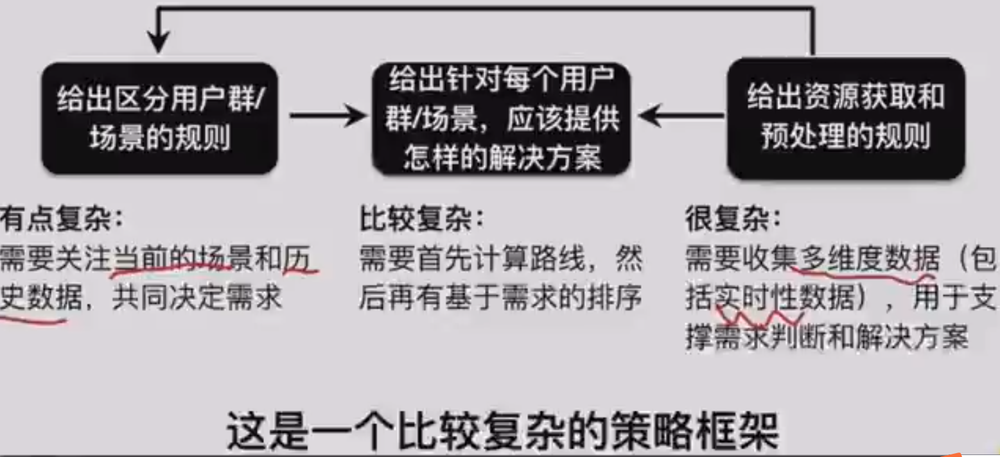
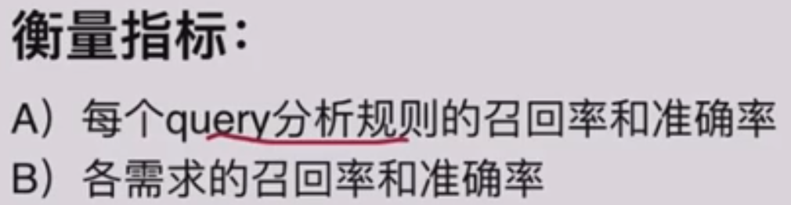
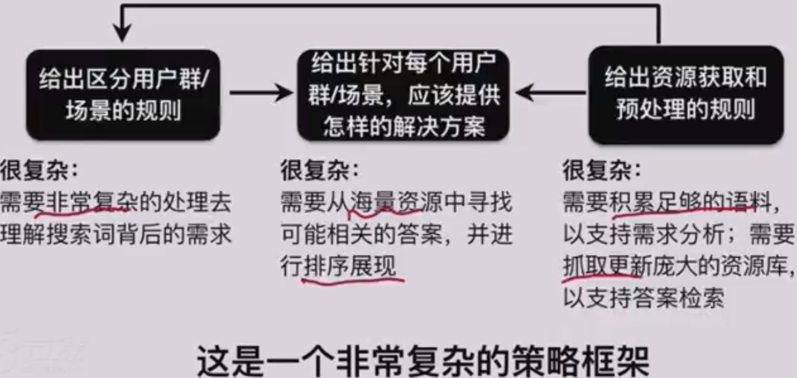

本文主要讲了策略在【功能导向型】核心业务以及【业务导向型】核心业务上的应用。
策略的应用
策略的特质
精细化的方案
自我进化
适合的方向
个性化服务
效率
应用MAP
核心业务：功能导向型（关注）、业务导向型（兼顾）
增长：拉新、留存
风控：反作弊、风险评估
数据：基础数据、画像标签
策略在【功能导向型】核心业务上的应用
只需要考虑单一用户（群）的需求，可以给出相对明确的需求满足理想态，策略围绕该理想态努力
策略框架

需求理解
定义衡量规则的标准，将其数字化（通常是准确率和召回率）——>给出区分不同用户群/场景的规则
提供解决方案
定义好的体验的标准，将其数字化（取决于具体产品类型，通常是产品核心指标）——>给出针对每个用户群/场景，应该提供怎样的解决方案
资源支持
定义衡量规则的标准，将其数字化（通常是准确率和召回率）——>给出资源获取和预处理的规则
策略框架
案例：屏幕亮度策略思考方法
产品目标：根据外界因素变化给出最佳亮度输出
需求理解：由外部光源亮度、光源类型、系统时间、应用类型、用户历史行为等特征来区分
衡量指标：各特征的召回率和准确率（能否正确判断光源类型）
解决方案：触发条件、亮度变化基本原则、稳定性等考虑，通过示例case表达理想态，产出亮度计算的函数
衡量指标：用户手动调节亮度的比例（从不满意的角度评逆向评估）、其他基于反馈的监控
资源支撑：亮度传感器能实现数据收集、背光源提供亮度控制接口
衡量指标：数据收集覆盖率、收集准确率，亮度控制接口精度
案例：目的地输入模块
产品目标：帮助用户以最低成本完成目的地的输入
需求理解：（对需求的预测）
出发地
时间点
用户历史数据
用户正在输入的term
衡量指标：各推荐策略的召回率和准确率
解决方案：（广义的推荐）
目的地推荐模块
搜索推荐模块
搜索建议模块
衡量指标：
用户输入成本越低越好
更低成本的推荐的使用率越高越好
进一步拆解为各推荐的召回率和准确率
资源支撑：
用户历史数据用于需求预测，地点数据作为推荐候选集合
衡量指标：
各类数据的召回和准确率（通常指清洗程度）
案例：公交线路推荐
产品目标：
给用户推荐最优的公交路线，最低代价（最少步行、最短时间、最低价格、最小风险）地从出发地到达目的地
需求理解：
出发时间（是否有强准时诉求）
目的地类型等
用户历史行为（是否有不行和价格倾向，普遍代价是什么）
判别当前主要代价
衡量指标：
各特征的召回率和准确率（增加【主动填写出发时间】的功能提升准确和召回。从排序点击情况逆向观察代价判断的准确率）
解决方案：
给出可到达的路线候选集合——根据需求判断的代价权重，给出候选路线的排序——给出排序依据（时长、步行、价格等数据）
衡量指标：
路线准确率和召回率。准确率：确实可到达（基于抽样评估可行性）。覆盖率：尤其是优质路线均覆盖
用户满意度。点击越少越好（摘要和引导足够满足），选用结果排序越高越好
其他基于反馈的监控
资源支撑：
用于需求判断：用户相关数据、目的地类型数据
用于路线规划：公交/地铁线路（站点、运营时间、班次间隔、票价等）
用于路线规划：路网数据
用于到达时间预测：路况历史数据（不同交通工具）

案例：网页搜索
产品目标
高效地获取信息
需求复杂又多变——从浩瀚的候选集合里找到正确的信息
不同用户输入同一query表达的需求可能不一致
同一用户在不同场景输入同一query表达的需求也可能不一致
需求理解：（广义的query解析）
- 需求明确（查天气）
结构简单清晰的query：经过切词处理即可进行后续检索（考虑切词紧密度）
口语化的query：需要进行纠错、同义转换等语义处理
表达方式很复杂的query：需要进行更加unique的语义处理（披星（）月）
通常根据影响面从高到底，RD增加一些unqiue的处理规则
- 需求明确，对答案有特殊需求（猪肉最新价格是多少）
需求明确，对答案有特殊要求：除了统一的query变换外，需要将特定要求转化成搜索引擎可理解的特征
猪肉最新价格——资源时效性
猩球崛起2迅雷下载——考虑资源可用性
PPT素材——可用性&特定文件格式
- 需求不明确，需要进行特殊扩展和预测（我想看杨幂）
欢乐颂——欢乐颂视频、剧情介绍、演员表、评论······
猩球崛起3——······、上映前需要预告片上映时间、上映中需要介绍评价在线购票、下映后需要介绍评论视频
上下文数据：搜了欢乐颂后，用户是否主动更改query搜索欢乐颂视频
类目数据：对于【欢乐颂】这种电视剧专名，天然就有视频、剧情等需求。pm可以提前梳理针对各类目的需求扩展list
个性化数据：对于特定类目可以进行地域拓展，家乐福——北京家乐福。电影专名，有的用户更倾向看剧情、有的倾向看评论

解决方案
排序
不同需求间根据需求强度（命中需求的概率）
同一需求间根据结果质量（相关性、权威性、时效性、可用性）
实际上，会把需求强度、结果质量、用户点击行为统一成【唯一指标】决定首页结果的排序
这整个过程在大的搜索引擎中，已经进化为LTR系统
展现
通用策略：将结果页中与query相关的信息提取为标题/摘要，进行飘红等处理帮助用户筛选信息
（对于所有搜索引擎：都是将检索对象中用户最关心的内容提前至检索结果列表页，并根据情况以各种强化的样式展现）
细化策略：针对不同需求，又有如下不同的细化策略
对于单一明确信息需求，可以将答案信息直接在摘要中展现（天气、客服电话）
对于用户接下来路径相对收敛的需求，可以将下一步需求前置，缩短步骤（网易邮箱（登录）、欢乐颂视频（集数）、凡人歌（播放））
对于不同资源类型结果，可以针对性优化摘要（视频类、图片类、新闻类、地图类等）
衡量指标
每个需求打分、质量打分、展现策略的召回率和准确率
用户角度的搜索的满足度
搜索满足度
基于用户行为的搜索满足度：
摘取满足型需求——无/很少点击行为
单结果满足型需求——点击集中于首条结果
主动变换query比例低
翻页比例低等等
基于人为评估的搜索满足度：
query前3/5/10结果相关性——基于人为需求判断，当前结果是否能满足；与竞品相比，是否有更好结果未收录、排序是否更优等
session满意度——从用户一个行为片段分析其是否得到满足
资源支持
自然语言相关
各类基础词库：用于query切词处理、同义转换、纠错等
语义理解和处理规则：用于query解析
网页相关
网页收录：
保证各类网页收录覆盖度
保证各类网页收录时效性：根据网页类型定义更新频率，重要或时效性要求高的资源可选站长主动提交的方式
页面分析：
对页面类型进行识别，页面中内容解析、为term赋权等
衡量指标
对于nlp相关，各类词库、处理策略的准确率、召回率等
对于网页收录，收录覆盖率、更新时效性等
对于页面分析，各类准确率、召回率等

案例：内容推荐策略思考方法
产品目标：kill time
需求理解：
基础特征（设备型号）
历史行为（杨幂相关新闻点击率90%）
实时特征（当前13点）
衡量指标：
各特征的召回率和准确率
解决方案：
- 排序：根据需求预测和结果的各类特征综合排序，统一到ctr预估的机器学习模型上
（基于用户：喜欢A的人也喜欢B，那么下一个看A的人可以给他推B）
（基于内容：杨幂的绣春刀2，可以推绣春刀1、杨幂的其他内容）
（规则很难细化、优化，容易达到瓶颈）
（把需求打散到特征粒度，知识图谱）
- 展现：为点击服务，同时避免标题党
（头条号会自动推荐标题）
衡量指标：
ctr预估的准确率，进一步拆分为各策略的召回和准确率ctr和停留时间
资源支撑：（网页资源和自然语言资源）
网页资源：同样考虑优质内容的覆盖率和时效性、甚至以产品手段生产unique内容
自然语言：为网页分类、特征分析提供支持
衡量指标：
内容的覆盖率和时效性
各特征的召回率和准确率
小结
策略框架：
细分好用户/场景requirement，设计好把什么资源给到什么用户的rule，准备好用来细分和满足的资源resource；
定义好各环节的理想态，并将优化目标数字化；
以指标驱动3个R的进化。
策略在【业务导向型】核心业务上的应用
【业务导向型】定义
需要考虑多个存在显著需求差异、甚至利益冲突的用户群，策略要在多个利益群之间寻找合适解决路径，使得群体利益最大化。
随着阶段性目标变化，策略路径也会随之变化。
（所谓双边/多边市场）
案例：美团外卖

策略框架
单方利益——多边关系
策略框架——分析每个角色
针对每个角色，都是一个功能导向型的策略框架
策略框架——建立多边关系：平衡
将阶段性目标拆解为与各用户群利益相关的公式，寻求多方利益的最大化
在此过程中，任何一方的退让以边界值（给出每一个用户群可承受的最大化的伤害）为底线
背景：地主家里十亩地，两个儿子。大儿子种小麦，小儿子种玉米
各方利益：每个儿子都希望自己名下的地更多
平台利益：父亲希望所有地的产量最高
平台利益到各方利益的拆解：
产量=小麦亩产量小麦亩数+玉米亩产量玉米亩数
边界值：每个儿子小于一亩地就要分家
现阶段策略规则：大儿子九亩，小儿子一亩
案例：商品定价
各利益体需求
几个利益体：卖家、买家
买家希望以最低价格买到自己需要的商品
卖家希望将商品售卖出最高价格
定义每个利益体的利益边界值
边界值：
买家购买价格低于心理价位
卖家售卖价格大于成本
找到平衡的公式
第一步：分析双方利益关系
- 双方都是希望促成交易的，矛盾点在价格高低
第二步：拆解交易过程
- 背景定义：我们假设卖家只有一件商品来简化问题
- 交易过程：每一个买家进店时，都存在一次定价环节
第三步：定义不同目标下的定价策略
小结
案例：出行APP
各利益体需求
几个利益体：乘客、司机
乘客希望最近的司机接单（等待时间最短）
司机希望最挣钱的订单（接驾最短、距离更长、更不堵车的订单）
定义每个利益体的利益边界值
边界值：
乘客能接受的最长等待时间是X分钟
司机能接受的最远接驾距离是Xkm
找到平衡的公式
第一步：分析双方利益关系
双方都是希望促成交易的
矛盾点在每个人都渴望最优质的匹配对象，而优质资源是稀缺的
第二步：定义撮合规则
阶段性目标：成交率最大（更偏向乘客利益），每一时刻的订单被最大程度地消化
撮合方案：
产品进化
在不同的阶段性目标下，产品是如何进化的
案例：出行APP的司乘撮合系统
产品目标：实现平台上订单的高效分发。乘客打到车，司机挣到钱
衡量指标：广义的成交率为核心指标
如果让你设计一个给宠物上门洗澡的订单分发系统，你会怎么做？
用户方、平台方、服务方
用户发起订单——平台接受订单——平台分发订单——服务方接受订单——服务方上门服务——用户完成订单——平台给服务方转账
平台接受的订单存放到订单分发系统
订单分发系统分为两种分发模式——抢单和派发，根据服务方提供的信息进行匹配
用户下单——找到就近的空闲的师傅——师傅上门服务
版本1.0：以乘客为中心
阶段现状：需求较低频和稀疏，w单/天
乘客：加到车就好
司机：对平台尚无依赖
解决方案：
以乘客为中心，由近及远播单
存在最大播单距离，以保证司机体验
司机在线多少小时给奖励
——需求分发优先
随着订单量增长，开始暴露问题：
司机听到的订单是以订单生成为触发的，订单密度足够高时，多个订单无差别推给司机，司乘体验都出现了严重问题
阶段现状：需求较密集，10w单/天
乘客：打到车
司机：希望更近更好的订单（市场上存在多个叫车平台）、
版本2.0：以司机为中心
解决方案：
以司机为中心，当司机需要订单时，由近及远选取周围未成交订单播单
存在最大播单距离，以保证司乘体验
——供给占用优先
随着订单量增长，开始暴露问题：
司机周围订单变得越来越多，仅按距离排序难以将好订单筛选出来，需要进一步优化排序策略
版本2.n：以司机为中心的订单推荐系统
阶段现状：需求继续密集，>10w单/天
解决方案：
排序系统进化：开始引入订单长度、目的地特征、已被抢概率、取消概率、司机特征等因素，升级为基于ctr预估的推荐系统
以司机为中心，当司机需要订单时，选取周围订单，按ctr预估模型进行排序（用对核心目标硬影响更大的司机的价值观来作为多边关系的原则）
存在最大播单距离，以保证司乘体验
——供给占用优先
阶段现状：需求继续密集，100w单/天
新问题：司乘存在明显的分布不均衡，出现了【离所有司机都很远无法被播出的P1】和【离很多司机都最近、被重复播放多次的P2】
版本3.0：以平台为中心的订单撮合系统
阶段现状：需求继续密集，>100w单/天
解决方案：
同时考虑整个区域内的所有乘客司机，以哪种组合方式可以达到所有人的体验最优（成交率最高）
存在最大播单距离，以保证司乘体验
订单价值稍低X抢单成功率高=期望还是高的
——群体利益最大化
出行APP的司乘撮合系统的进化
版本1.0（以乘客为中心，由近及远分发）（需求低频稀疏，需求分发优先）
版本2.0（以司机为中心，由近及远分发）（需求较密集，供给占用优先）
版本2.n（以司机为中心的订单推荐系统）（需求较密集，供给占用优先）
版本3.0（以平台为中心的订单撮合系统）（需求很密集，群体利益最大化）
随着平台规模的进化和供需变化，阶段性目标持续变化，业务导向的策略架架构也持续进化
版本3.0指派系统（以平台为中心的订单撮合系统）（更强的确定性）
版本3.0指派系统、动态调价（提高绝对价值，退让多边关系）（更强的市场调控能力）
拼车······
小结
策略框架：
是多个功能导向型框架的集合；
寻求多个群体间共同的利益点，作为不同小框架的结合点；
最终的目的是生态繁荣。
平衡是一个生态系统的基础；各自成长是生态系统繁荣的必要条件。